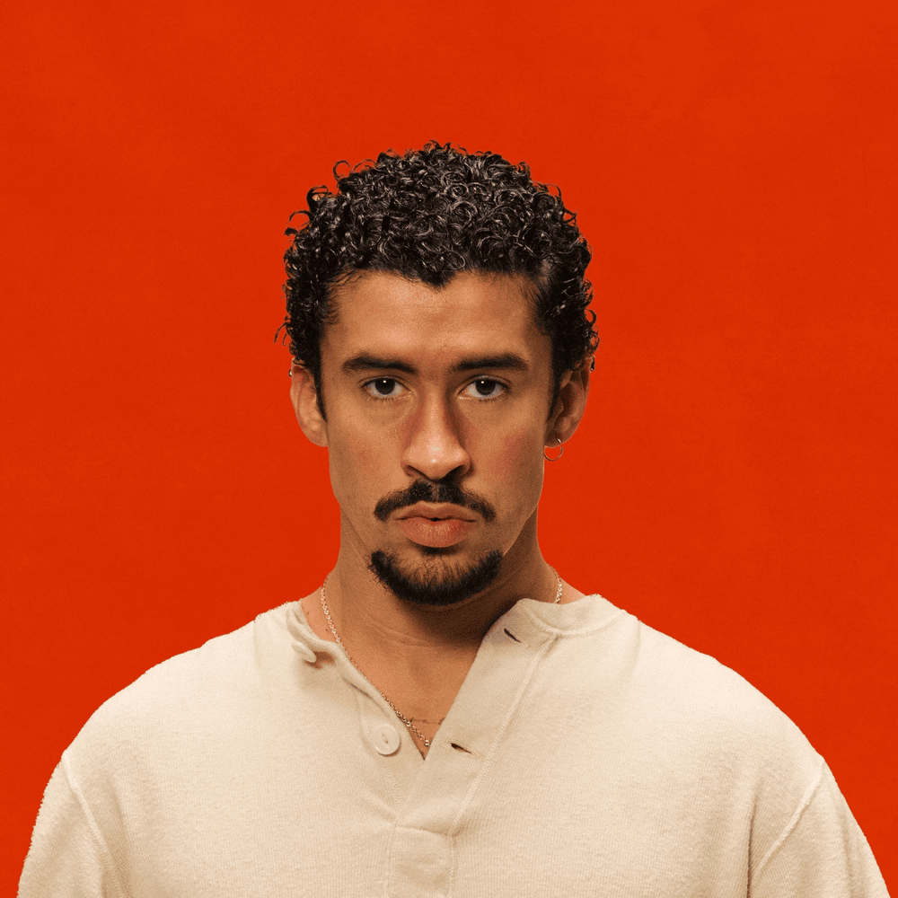
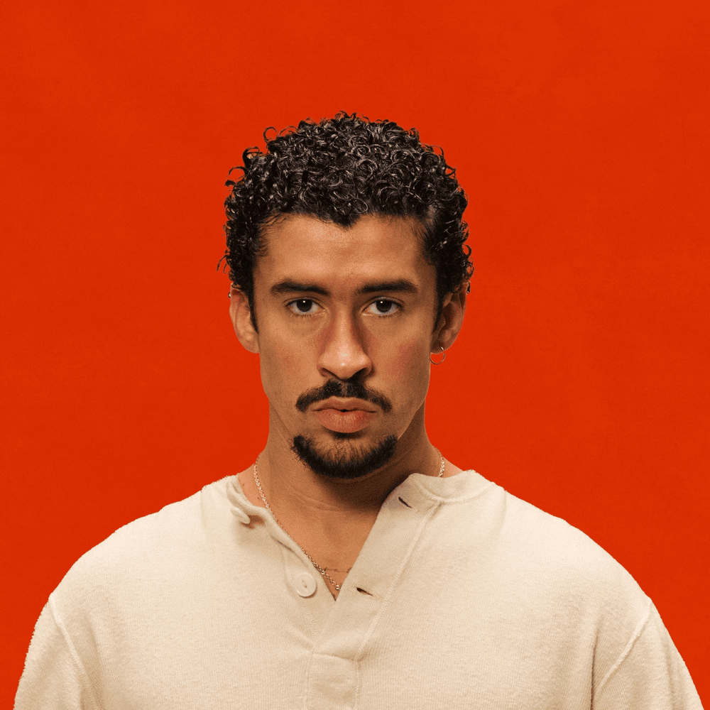

España

Puerto Rico
Colombia

España
Puerto Rico
Colombia
Quevedo comenzó su carrera en 2020 con el productor Linton, y en 2021 su sencillo «Ahora y siempre» alcanzó gran éxito en Spotify. En 2022, colaboró con varios artistas y lanzó canciones como «Cayó la noche remix» y «Fernet», además de su exitosa colaboración con Bizarrap. En 2023, lanzó su primer álbum Donde Quiero Estar, con colaboraciones de artistas como Myke Towers y Cruz Cafuné. En 2024, lanzó el sencillo «La última», donde reflexiona sobre su carrera y anuncia una pausa en su música, debido al agotamiento tras años de trabajo constante.
Saiko, nacido en Armilla, Granada, comenzó a rapear a los catorce años y formó un dúo con su hermano llamado Wido y Saiko. En 2020, inició su carrera en solitario, lanzando su primer sencillo «Te quiero fuera». Su fama creció en 2022 con el éxito de «Polaris», que se convirtió en disco de oro. A lo largo de 2023, lanzó varios éxitos, como «Supernova» y el remix de «Polaris», y colaboró con artistas como Quevedo, Mora, y Omar Montes. En diciembre de 2023, lanzó su EP Saliendo del planeta, y en abril de 2024 presentó su primer álbum Sakura, con colaboraciones de artistas como J Balvin y Bryant Myers. Además, en 2024, anunció que patrocinaría la camiseta del Granada CF.
Emilio Roca Cáceres, conocido artísticamente como Lucho RK, ha logrado destacar dentro de la escena del rap y la música urbana en Canarias, dejando una huella con su estilo sincero y profundo. Desde sus inicios, ha sabido plasmar en su música las vivencias cotidianas, los altibajos emocionales y las complejidades de la vida, conectando con un público que busca letras que hablen desde la verdad y el sentimiento. Lucho RK ha demostrado ser un artista capaz de transmitir con autenticidad las realidades de su entorno, convirtiéndose en una de las figuras más destacadas de la música urbana canaria.
Raul Clyde es un artista emergente en el ámbito de la música urbana, aunque no es tan conocido a nivel masivo como otros artistas más establecidos, ha logrado captar la atención de un público que valora la autenticidad en las letras y la frescura de su estilo. Su música abarca una variedad de géneros, principalmente influenciada por el rap, trap y reguetón, lo que le permite experimentar con diferentes sonidos y temáticas. A pesar de su carrera relativamente reciente, Raul Clyde ha crecido a través de colaboraciones con otros artistas dentro de la escena urbana, lo que le ha dado más visibilidad. A medida que ha ido avanzando en su carrera, ha mostrado una clara evolución tanto en su estilo musical como en su presencia en redes sociales, algo clave para los artistas de su género.